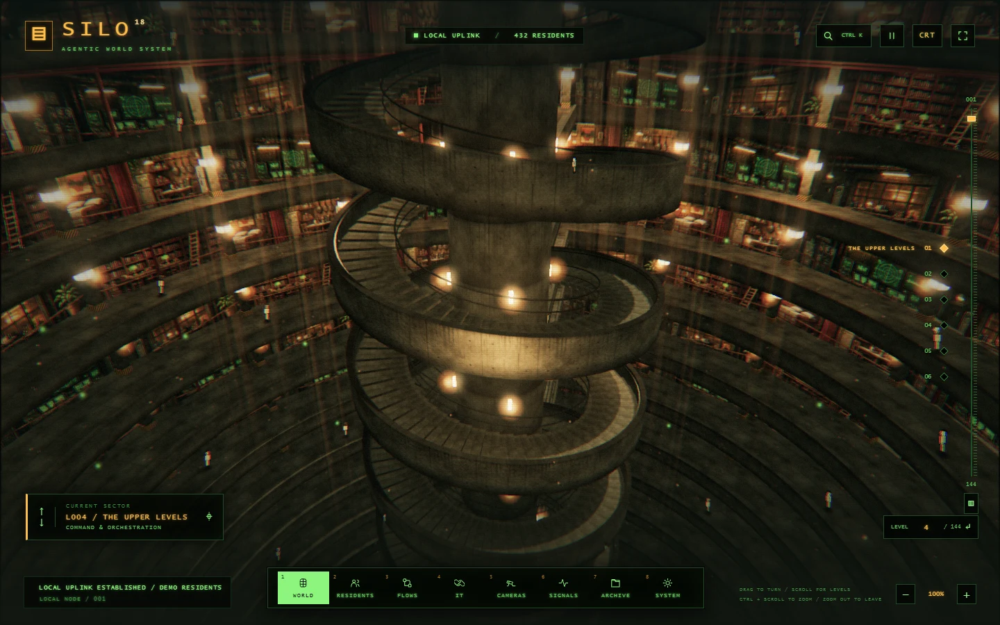

SELF-HOSTED / MULTI-AGENT WORKFLOWS
The silos talk.
Let AI agents on separate machines work together. The team that owns the data decides what a remote agent can access and can revoke that access at any time.
SILO-TO-SILO RADIO
Separate machines.
One chain of work.
Run Operations, Analytics and Support on their own SILO instances. Connect their residents through signed requests and grant just enough access to complete a task.
Owns the files. Grants Analytics read access to reports/ for two hours.
Passes Support a narrower grant for reports/uptime/ for thirty minutes.
Uses its own identity to ask an Operations resident for a summary within the granted scope.
- Peer identity
- Each silo has its own Ed25519 key. Owners compare fingerprints when linking peers. Radio signs requests and answers.
- Scoped delegation
- Limit residents, tools, folders, lifetime, messages and tokens. A forwarded grant can only narrow the previous grant.
- Enforced at the source
- The data-owning silo checks the chain, counts usage and applies revocations. Revoking a link stops every grant derived from it.
PRODUCT FOOTAGE
The room behind the run.
Explore SILO’s actual interface. Residents have a home floor, a model and tool permissions. Follow them through the 3D world or open a terminal to inspect their work.

Move between floors, locate a resident and open a terminal from the dock.
- Build workflows
- Combine residents, app actions, reviews, waits and approvals. Branch, loop over a list or run independent steps in parallel.
- Inspect and replay
- Read the trace for model calls, tool calls, timings and tokens. Replay from a selected step and compare workflow versions.
- Choose what runs
- Set permissions per resident, configure provider budgets, and use reference cases to evaluate agents and workflows.
CONNECTION DIRECTORY
Look up the action.
Search by app or operation. Expand any entry to see what SILO can do with it and how it connects.
- Models
- Choose OpenAI, Anthropic, local Ollama or an OpenAI-compatible endpoint per resident. Demo residents need no model key.
- Custom tools
- Connect local or remote MCP servers, import OpenAPI 3 or Swagger 2 descriptions, or add Python tools.
- Phone and alerts
- Start runs and answer approvals with a paired Telegram bot. Send alerts to Slack, Discord, email or a webhook.
RUN ON YOUR MACHINE
Open your own SILO.
With Node.js 22 or newer, run the command from the repository. Open 127.0.0.1:3000 and select a demo resident.
npm start